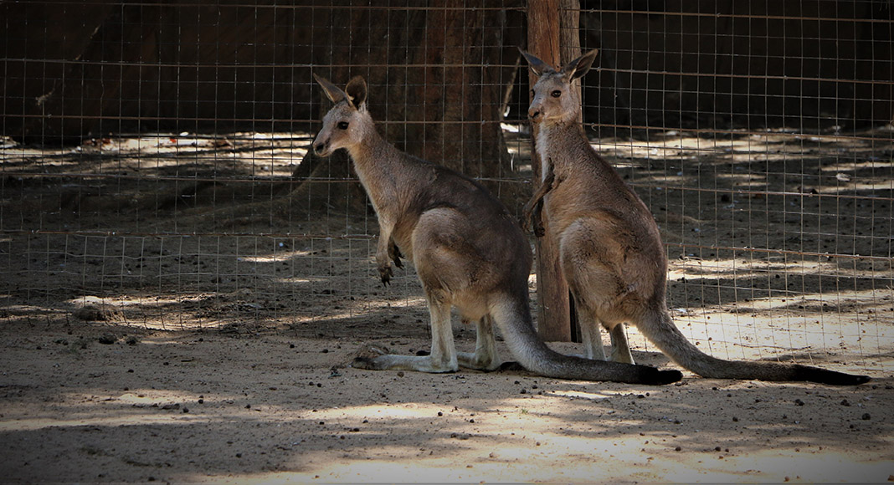

Check out this article about Lagos, Portugal click me The city of Lagos is located on the Southern coast of Portugal. It is known for its vibrant nightlife, beautiful rock formations along the beaches, and historic significance to the Portuguese Age of Discovery. This article details history, geography, climate, ecoregions/protected areas, economy, transportation, architecture, culture, and notable citizens. It is an excellent resource if you are looking to travel to this destination or learn more about Portuguese history and geography.

Favorite Band Billie Eilish and Finneas Website click me